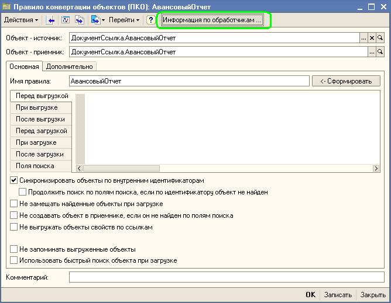

Механизм обработчиков событий является один из ключевых в технологии конвертации данных с помощью "Конвертации данных 2.0". Грамотное и умелое использование этого механизма позволяет разработчику быстро решать практически любые задачи по преобразованию данных. С помощью технологии обработчиков легко реализуются отбор данных, конвертации данных разных типов, сложные выборки данных, настройка параметров конвертации и многие другие задачи.
Рассмотрим основные принципы этой технологии. В ключевых точках алгоритмов выгрузки и загрузки данных обработок универсального обмена есть возможность исполнения программного кода взятого из правил обмена данными, а не "зашитого" в обработке выгрузки или загрузке данных. Конфигурация "Конвертация данных 2.0" предоставляет возможности для интеграции такого программного кода в правила обмена данными.
Всего различных мест в алгоритмах обмена данными, где может быть выполнен сторонний код, предусмотрено более двадцати. Соответственно, в конфигурации предусмотрено создание различных типов обработчиков событий.
Код обработчиков событий "привязан" к объектам правил обмена - элементам справочников: конвертации, правила конвертации объектов, правила конвертации свойств, правила выгрузки данных и правила очистки данных. Естественно, что код обработчиков событий должен удовлетворят ряду требования. В частности для управления процессом конвертации в коде обработчиков необходимо использовать специальные переменные - параметры. Полное описание всех типов обработчиков событий и доступных переменных можно найти в информации об обработчиках в соответствующих формах.

Внимание
Технологии "Конвертации данных 2.0" позволяют вести обмена данными с информационными базами, реализованными на платформах "1С:Предприятие 7.7" и "1С:Предприятие 8.0". В силу особенностей работы платформы "1С:Предприятие 7.7" подготовка правил обмена данных с использованием обработчиков событий для информационных баз, реализованных на этой платформе имеет ряд особенностей.
Для платформы "1С:Предприятие 7.7" нет возможности выполнить произвольный код (аналог функции Выполнить для V8). Если необходимо использовать обработчики событий для платформы V7.7 необходимо заменять текст обработки выгрузки или загрузки данных текстами обработок, которые выдает конфигурация "Конвертации данных 2.0".
Если необходимо перенести данные из V7.7 в V8 тогда:
При выгрузке, кроме самого файла правил, система генерирует текст модуля для обработки V77Exp.ert с функциями, реализующими обработчики событий. Затем, в конфигураторе, мы должны заменить модуль стандартной V77Exp.ert на новый, сгенерированный "Конвертацией данных 2.0".
При разработке решений по обмену данными на платформе "1С:Предприятие 7.7" нужно помнить про эту важную "мелочь". Ваши правила будут корректно работать только в том случае, если Вы используете модифицированную обработку, текст модуля которой создан при выгрузке правил обмена данными. У этого правила есть одно исключение - если Вы не пользуетесь обработчиками событий, то можно применять стандартную обработку.